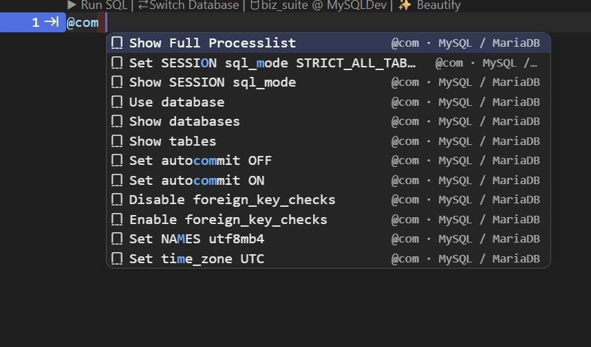
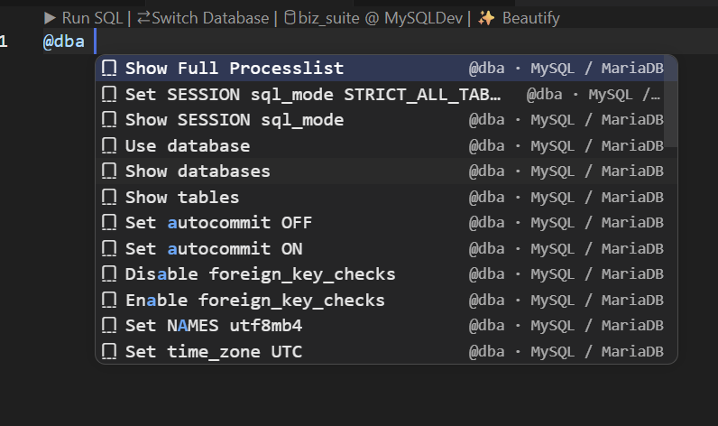
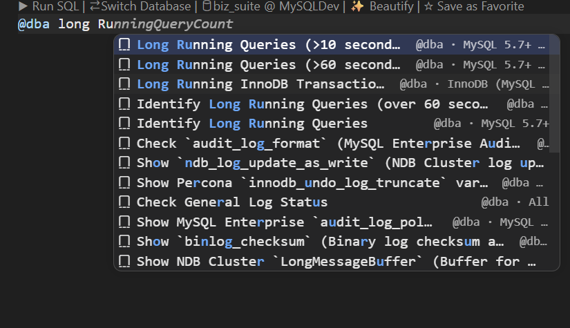
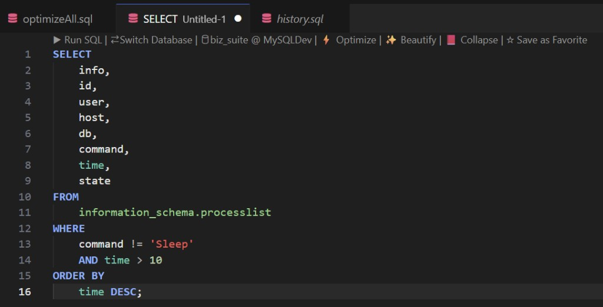
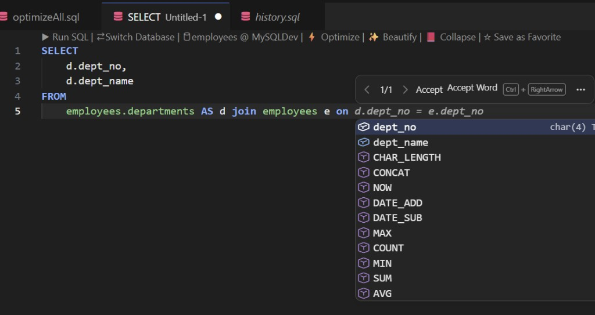

SQL autocomplete
Schema-aware IntelliSense in your .sql files: type @ channels for command libraries, pick tables and columns from live metadata, accept FK-aware JOIN … ON lines, and reuse favorites and recent queries — all bound to the connection your tab is scoped to.
Overview
SQLLens.AI adds a completion provider on top of VS Code’s SQL editor. Suggestions come from your active connection (explorer tree + per-file database binding), curated command libraries, starred favorites, and execution history.
This page is the full autocomplete reference. For drag-and-drop assembly and shortcut tokens that pair with tree drags, see the Query builder guide (start with the demo storyboard).
- Type to complete — tables, columns, keywords, functions, snippets.
@channels — filter thousands of DBA commands, diagnostics, DDL/DML templates, favorites, and history.- JOIN intelligence — suggested
ONpredicates from foreign keys and learned patterns. - Reuse — favorites, frequent queries, and recent runs surface at statement start.
Screenshots (what you see in the editor)
@com — common MySQL / MariaDB commands
Type @com at the start of a line (or after ;) to open the command catalog. Keep typing to filter — matching letters highlight in the list. Each row shows the channel tag and engine on the right (for example @com · MySQL / MariaDB).

@dba — same library, DBA-oriented filter
@dba is an alias for the command channel — ideal for process lists, session settings, and maintenance templates DBAs reach for daily.

@dba opens the same family of pre-built statements as @com; use whichever tag matches your muscle memory.Search inside a channel
After the channel tag, add words to narrow the list. Example: @dba long RunningQueryCount surfaces long-running query diagnostics (labels show engine/version hints such as MySQL 5.7+ or InnoDB).

@ channel — no need to memorize exact catalog titles.Accept a catalog row → full SQL
Pick a row with Enter or Tab. The entire @… prefix is replaced by the stored SQL (multi-line templates insert as one action).

Schema columns & functions
After SELECT and table references, invoke completions for qualified columns (with data types in the detail column) plus common functions (COUNT, CONCAT, DATE_ADD, …). Use this together with JOIN ON suggestions.

Connection & active database
Completions reflect the database your SQL tab is bound to. If the tree Active badge and the editor disagree, you may see valid but unexpected object names.
- Fix first: select the intended database in the explorer (or per-file binding) and refresh the tree if metadata changed.
- No connection: schema rows shrink; keywords and some libraries may still appear.
- Large catalogs: join discovery caps scan breadth so the editor stays responsive — qualify known tables when demoing huge schemas.
How to open & navigate the list
| Action | Windows / Linux | macOS (typical) |
|---|---|---|
| Open suggest widget (implicit) | Keep typing when VS Code Quick Suggestions are enabled | |
| Force completions | Ctrl+Space | ⌃+Space or ⌘+Space (keymap-dependent) |
| Move selection | ↑ ↓ | |
| Accept highlighted row | Enter or Tab | |
| Next snippet placeholder | Tab (after accepting a snippet row) | |
| Dismiss list | Esc | |
| Filter as you type | More characters narrow matches; labels show category (table, column, favorite, @ channel, …) | |
Inside --, #, or /* */ comments, SQLLens.AI does not offer SQL completions (string and backtick literals are respected).
Editor run shortcuts (separate from the completion widget): see Keyboard shortcuts — for example Ctrl+Enter to run the statement under the caret.
@ mention channels (command palette in the editor)
Type @ followed by a channel keyword, then optional filter text. The list replaces the whole @… span when you accept a row. Channels are progressive: @f → @fa → @fav works letter-by-letter without typing the full word.
Channel reference
| Type this | Also works | What appears |
|---|---|---|
@com | @command, @cmd, @sql, @c | Pre-built MySQL/MariaDB (and engine-specific) command library — session, metadata, maintenance |
@dba | (alias of command channel) | Same catalog; use for DBA runbooks (processlist, long queries, locks, …) |
@fav | @favorite, @favorites, @f | Your starred SQL from the Favorites panel |
@history | @his, @h | Recently executed queries on this connection |
@fre | @frequent, @frequently | Most-run queries (execution count) for this connection |
@query | @q | Blend of frequent + recent templates |
@syntax | @syn, @s | Syntax pattern templates (SELECT/INSERT shapes, …) |
@table | @tbl | Tables & views from live metadata |
@column | @col | Column names (schema-scoped) |
@index | @idx | Index-related snippets and objects |
@explain | @exp | EXPLAIN / analyze variants |
@ddl | — | CREATE / ALTER / DROP / TRUNCATE templates |
@dml | — | SELECT / INSERT / UPDATE / DELETE templates |
@grant | @perm | User & privilege helpers |
@lock | @blk | Lock & blocking diagnostics |
@repl | @replication, @rep | Replication status & troubleshooting |
@snippet | @snip | Curated multi-line snippets |
@err | @last | Help tied to the last session error |
@pin | @star | Pinned / starred catalog entries |
@com process— narrow to processlist-related commands@dba long— long-running query diagnostics@fav payroll— starred snippets whose name or shortcut matches@history employees— past runs touching the employees table
Slash shortcuts (/history, /fav)
At statement start you can also type progressive slash paths:
/history— same bucket as@history/fav,/favorite,/f— favorites (not the same as/fre, which maps to frequent queries)
Autocomplete vs Query Builder
| Autocomplete (this page) | Query Builder | |
|---|---|---|
| Gesture | Type; pick from the list (Enter / Tab) | Optional token at line end, then drag table/column from tree |
| Best for | Spelling identifiers, @ libraries, JOIN ON, reusing SQL | Multi-clause scaffolds, clause-aware drops, FK dialogs |
| Overlap | Tokens like SE, LJ, WH appear as hints | Same tokens expect a drag to finish the builder flow |
What feeds the completion list
Suggestions are merged from several sources (specialized rows first, then schema objects):
@mention channels — when an@or/mention is active, that channel owns the list.- Query Builder token hints — two-or-more-letter shortcuts (
SE,LJ,WH, …) that pair with tree drags; accepting inserts text only. - Table aliases —
AS aliasafterFROM/JOIN. - JOIN patterns &
ONlines — FK metadata, learned joins, confidence-ranked predicates. - Favorites — starred snippets (★); shortcuts you configured match too.
- Frequent & recent — queries you actually ran on this connection.
- Diagnostic templates — health, locks, replication, space (labeled as templates).
- Engine command library — large version-aware catalog (MySQL/MariaDB, PostgreSQL, SQLite each ship their own set).
- Schema layer — tables, views, columns,
INSERTcolumn lists, DDL/DML fragments, SQL keywords.
Library rows with the same visible title dedupe — your ⭐ User Favorite wins over a generic catalog twin.
JOIN targets & ON conditions
After JOIN (or while choosing the next table), completions can insert:
- A full
[INNER|LEFT|…] JOIN schema.table ON …snippet - Just
ON predicateafter the joined table - Only the predicate body when you are already inside
ON
Suggestions blend foreign-key edges, cached successful joins, and column-name bridges. Multiple valid paths may appear — pick the one that matches your data model (bridge tables vs direct FK).
Optional workspace setting skyline-mysql.joinCompletions.showDeptEmpSubqueryBridge adds an employees sample-db bridge path between employees and departments (off by default).
Favorites, frequent & recent
Starred favorites
- Save from CodeLens ☆ Save as Favorite or the Favorites panel.
- Surface at statement start, after
;, or while typing early keywords — not in pure “pick a table after FROM” spots. - Match by name, shortcuts you assign, or prefix of the stored SQL.
- Insert favorite: Command Palette ★ Favorites: Insert Query — default ⌘+K then F (details).
Frequent & recent (automatic)
- Recorded when you run queries — no manual starring.
@fre/@frequent— sorted by execution count.@history— sorted by last run time.- Labels show query type + tables when detected; detail shows run count or timestamp.
Query Builder tokens in the list
When you start a statement with two or more letters, autocomplete may show drag-and-drop hints (icons such as 📥 🔍 ✏️). These reinforce the same vocabulary as Query Builder shortcuts — for example:
| Token | Intent (after you drag from tree) |
|---|---|
SE, SEL, SELECT | SELECT scaffold |
IN, INS, INSERT | INSERT scaffold |
UP, UPDATE | UPDATE scaffold |
DE, DELETE | DELETE scaffold |
LJ, IJ, RJ, CJ | LEFT / INNER / RIGHT / CROSS JOIN extension |
WH, WL, WI, WB | WHERE / LIKE / IN / BETWEEN column predicates |
CR, CREATE, CT | CREATE TABLE patterns |
EXP, EXPLAIN | EXPLAIN SELECT helper |
Single-letter builder shortcuts (s, d, …) still work for drags but do not appear in the completion list — see clause-letter shortcuts.
Settings that affect autocomplete
| Setting (VS Code) | Effect |
|---|---|
editor.quickSuggestions | Controls implicit completion while typing (VS Code core) |
editor.suggestOnTriggerCharacters | Whether . and similar trigger the widget |
editor.tabCompletion | Tab accepts suggestions when on |
skyline-mysql.joinCompletions.showDeptEmpSubqueryBridge | Extra bridge join suggestion on sample employees DB |
Full settings index: Editor & drag-and-drop.
Troubleshooting
- Empty or tiny list — confirm connection + SQL language mode; try Ctrl+Space; check you are not inside a comment.
- Wrong tables — wrong active database; refresh tree and reselect DB for the tab.
- No JOIN rows — caret not in JOIN context, or metadata still loading — expand connection in tree first.
@channel shows nothing — finish typing the channel keyword (@comnot bare@cmid-word); add filter words or try@dba.- No favorites — mid-statement positions suppress them; star a query first; pre-seeded library rows with zero usage stay in the Favorites panel only.
- No frequent/recent — run a query once on this connection, then invoke completions at the start of the next statement.
Related docs
- SQL workspace — autocomplete summary
- Query builder demo
- SQL Favorites panel
- Keyboard shortcuts
- Diagnostic query library